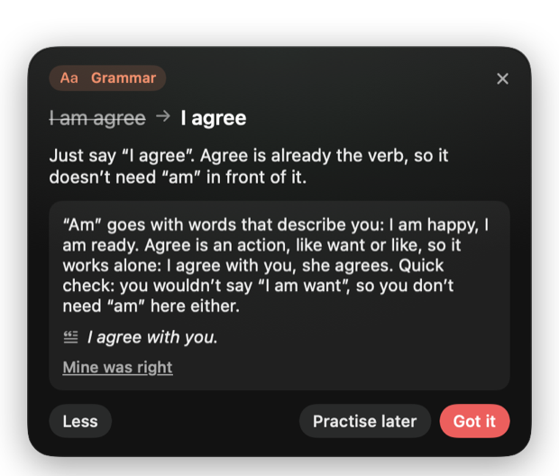
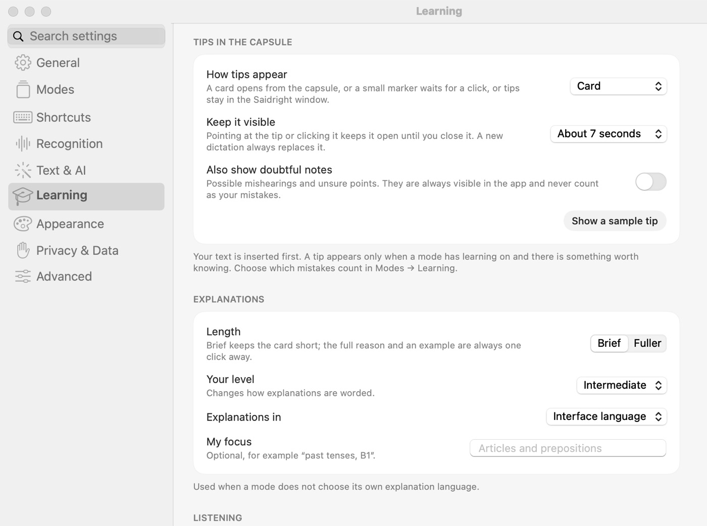
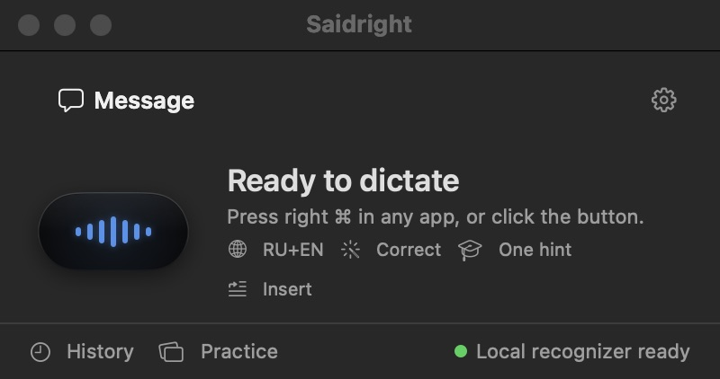
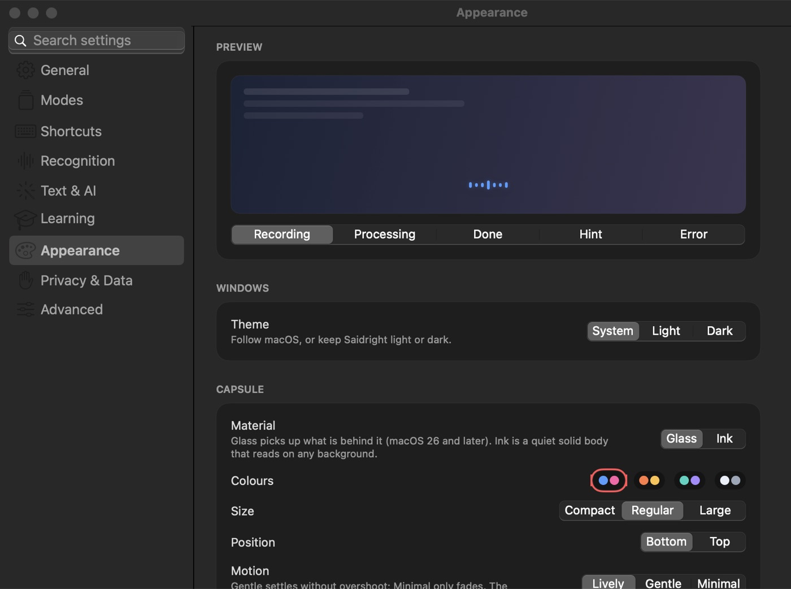
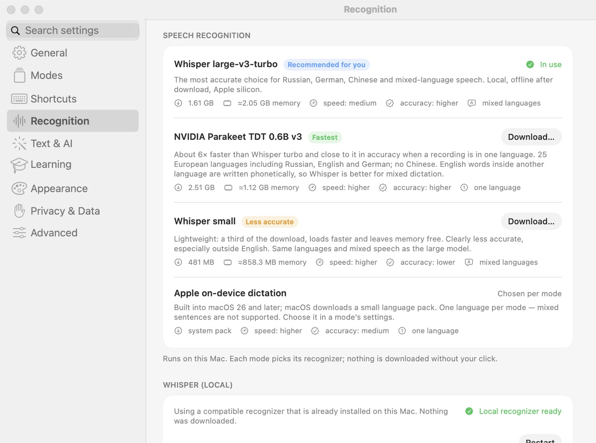

Practise a language every time you speak
Most learners never get feedback on what they actually say. Saidright gives it inside the work you're already doing — no lessons to schedule, no app to switch to.

Your sentence, corrected
Your text goes in exactly as you said it. Then a small card grows out of the capsule with the one correction worth knowing.
Explained like a friend
One short reason in your own language, pitched to your level. Tap “Why?” for the rule and an example.
Only what matters
Grammar, word choice, punctuation and style are labelled differently. Correct sentences get nothing — no praise, no noise.
Honest about the mic
If the recognizer may have misheard you, the tip says so — and it never counts as your mistake.
From tips to skills
“Practise later” turns a correction into a spaced-review card. Your recurring topics show what to work on next.
Never in your way
Tips never touch your text or steal keyboard focus. Keep typing; ⌃⌥L brings the last tip back.


Tips use a text model you choose: free and fully local through Ollama, or your own cloud key. Tips work in any language your model knows; English and Russian are the most thoroughly tested so far.
And dictation you'll want to keep
A small capsule while you speak, text where your cursor was — fast, private and shaped to your taste.
Works in every app
Tap right ⌘, speak, tap again. Mail, Slack, your editor, a browser — the text goes into the field you were typing in, and Saidright tells you if it couldn't.
Private by design
Speech is recognised on your Mac with Whisper or NVIDIA Parakeet. Audio never leaves it. Text editing and tips are optional and can run locally too.
Fast
Text usually appears about half a second after you stop speaking. Parakeet decodes a phrase in roughly 0.1 s on Apple silicon.
Smart formatting
Dictate a few tasks and get a checklist, list things and get bullets, describe steps and get numbered steps. Ordinary sentences stay prose. Modes decide how much is edited; switch with ⌃⌥M.
Truly multilingual
Around 100 languages, and you can switch between them mid-sentence. Foreign terms keep their own spelling, and nothing is translated behind your back.
Made to be yours
Liquid Glass or quiet Ink capsule, palettes, size, motion, sounds, light and dark, your own shortcuts. Interface in English, Russian, German and Chinese.

Pick the recogniser that fits
Everything below runs on your Mac. “Automatic” uses Parakeet for one-language modes and Whisper for mixed speech.
| Model | Per phrase | Word errors RU / EN / DE | Best for |
|---|---|---|---|
| Whisper large-v3-turbo | ≈0.5 s | 4.1 % / 3.6 % / 4.4 % | Mixed languages, Chinese, personal vocabulary |
| NVIDIA Parakeet TDT 0.6B v3 | ≈0.1 s | 6.1 % / 4.3 % / 5.6 % | Speed, one language per recording (25 European languages) |
| Apple on-device | fast | — | No download; one language per mode (macOS 26+) |
Measured on 100 real-speech clips from the FLEURS dataset plus synthetic and mixed-language clips on an M4 Pro. Your voice and microphone will differ. Models are downloaded inside the app when you choose them (0.5–2.5 GB).

Your voice stays on your Mac
Local recognition
Audio is processed on the Mac and deleted after recognition unless you choose to keep it.
Optional text help
Editing and tips use a model you pick: free and local through Ollama, or a cloud key of your own. “Local only” blocks every cloud request.
No account, no tracking
No sign-up, no analytics, no telemetry. Keys are kept in the macOS Keychain. The source code is open.
Install in a minute
Saidright is free and not notarized by Apple (that costs a yearly fee), so macOS asks you once to confirm that you trust it.
Download and open the DMG
Get Saidright.dmg and drag Saidright into Applications.
Open it once
Double-click Saidright. macOS says it can't verify the developer — click Done (not Move to Trash).
Allow it in System Settings
System Settings → Privacy & Security → scroll down → “Saidright was blocked…” → Open Anyway, then confirm. You only do this once per version.
Follow the short introduction
Pick your languages, download a recogniser inside the app, and allow Microphone, Input Monitoring and Accessibility. Then tap right ⌘ anywhere and speak.
Want to check the file? Each release lists its SHA-256 checksum. Prefer to build it yourself? The source is on GitHub — swift test && scripts/build-app.sh.
Questions
Is it really free?
Yes. Saidright is open source under the Apache 2.0 licence. Local recognition and local tips cost nothing. Only an optional cloud text service you connect yourself bills you directly.
Does it need the internet?
Only to download a recogniser once. After that, dictation works offline.
Which Macs are supported?
Macs with Apple silicon (M1 or later) on macOS 14 or later. It is tested most on the newest macOS. Intel Macs are not supported.
Why does macOS warn me?
Apple's notarization requires a paid developer membership. This free preview is signed but not notarized, so macOS asks you to confirm it once in Privacy & Security.
Does it judge my accent or score me?
No. A transcript can't support that. Tips only cover clear grammar and word-choice mistakes, and a possible mishearing is labelled as such and never counted against you.